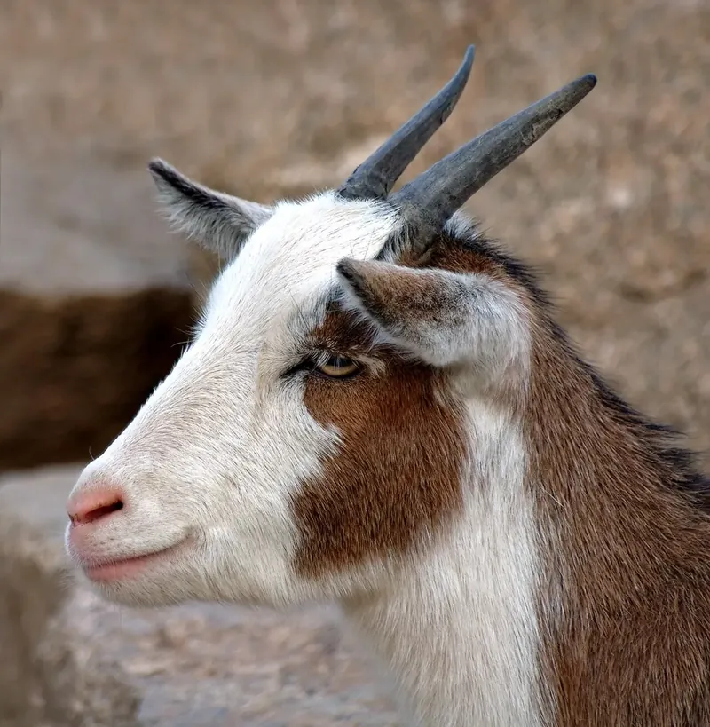
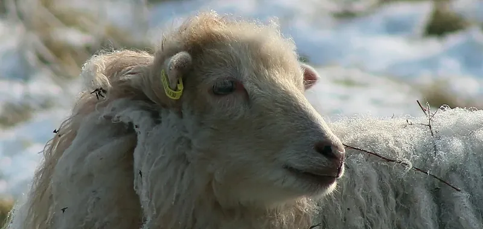
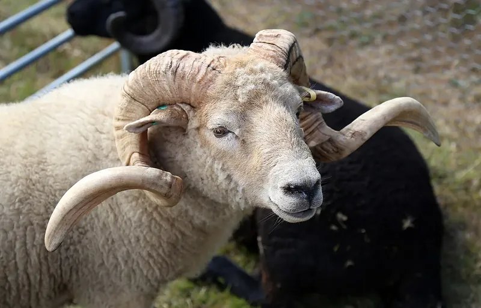

Chinese Zodiac Guide
Year of the Goat, Sheep or Ram? What to Call the 2027 Zodiac Animal
On Saturday 6 February 2027 the Chinese zodiac moves to its eighth animal. Some calendars call it the Year of the Goat, others the Year of the Sheep or the Ram, and none of them is wrong. The reason is a single Chinese word.

One Chinese word, three English animals
The eighth animal of the Chinese zodiac is called yang. As Wikipedia's article on the sign puts it, the Chinese word yang “refers to both goats and sheep”. When Chinese needs to be precise, it uses longer words: shanyang for a goat and mianyang for a sheep. The zodiac sign uses only the short word, so English translators have to choose.
That is why you will see the same year described as the Year of the Goat, the Year of the Sheep and the Year of the Ram. In 2015, the last Goat year, Google's Asia Pacific blog noted that English speakers were debating which name to use, and NPR asked language experts to settle it.
They did not pick a winner. “I don't think there's a wrong translation,” Lala Zuo, a professor of Chinese language and culture at the U.S. Naval Academy, told NPR. In NPR's words, yang “could refer to a goat, sheep or even a ram”. Zuo added that in ancient times the character referred to goats, and that in her view the goat is the animal more commonly seen by people in China.



Which name each country uses
Other Asian languages often settle the question for themselves, as NPR's 2015 report found:
- Vietnam: the goat. The Vietnamese name of the sign, mùi, is “unambiguously goat”, according to Wikipedia. James Lap of Columbia University told NPR: “In Vietnam, there is no sheep or ram at all because the weather is so hot.”
- Korea: the sheep. Sang-Seok Yoon of the University of Iowa told NPR that “the most prototypical image of yang for Korean people is sheep.”
- Mongolia and Tibet: the sheep. NPR's experts said the sheep is culturally important in Mongolia, and that Tibetan culture called 2015 the year of the female wood sheep.
- Cambodia: the goat. In the Khmer calendar the year is called Momae, and its animal is the goat, as in our Year of the Goat guide.
English-language calendars switch between all three names. Wikipedia notes the sign is “often referred to as the ‘Ram’ or ‘Sheep’ sign”. Whichever word you use, it is the same zodiac sign, with the same years, traits and compatibility.
When the 2027 Goat year starts
The Year of the Horse ends on the eve of Chinese New Year. The Hong Kong Observatory's 2027 calendar marks Saturday 6 February 2027 as the first day of the lunar year, and names it the Ding-wei year of the Goat. Ding is a Fire stem, so 2027 is a Fire Goat year.
A baby born from 1 January to 5 February 2027 is still a Horse; from 6 February 2027 the animal is the Goat. Our Chinese New Year 2027 guide explains the details, including the few days in early February when another method, the solar term Lichun, gives a different answer.
In Cambodia the animal year changes later: the Khmer Goat year begins at Khmer New Year in mid-April, as our Khmer New Year guide explains.
Every Goat year since 1943
Each Goat year starts at Chinese New Year, not on 1 January. These are the start dates in the lunar calendar table our zodiac checker uses, with each year's element:
- 1943: from 5 February, Water Goat
- 1955: from 24 January, Wood Goat
- 1967: from 9 February, Fire Goat
- 1979: from 28 January, Earth Goat
- 1991: from 15 February, Metal Goat
- 2003: from 1 February, Water Goat
- 2015: from 19 February, Wood Goat
- 2027: from 6 February, Fire Goat
Born in January or early February of one of these years? Check with the zodiac checker; you may still belong to the Horse year before.
What the Goat stands for
In the twelve-animal cycle the Goat is linked to the eighth Earthly Branch, wei, and to the two hours from 1 p.m. to 3 p.m. Its own fixed element is Earth, which never changes, unlike the element of each Goat year in the list above.
Tradition describes people born in Goat years as gentle, creative and caring. Wikipedia also notes that the character for yang is part of another Chinese character, xiang, which means auspiciousness. Like all zodiac lore, this is cultural tradition rather than a prediction. Read more in our Year of the Goat guide and the 2027 predictions.
Frequently asked questions
Is 2027 the Year of the Goat or the Sheep?
Both names are correct. The Chinese word for the zodiac animal, yang, covers goats and sheep (and rams), so English calendars use all three for the same sign. 2027 is the Ding-wei year of this animal, a Fire year.
When does the Year of the Goat start in 2027?
On Saturday 6 February 2027, Chinese New Year, according to the Hong Kong Observatory's 2027 calendar. People born from 1 January to 5 February 2027 are still Horses.
What element is the 2027 Goat?
Fire. 2027 is a Ding-wei year, and the Ding stem belongs to Fire, so 2027 is the year of the Fire Goat.
Which years are Goat years?
1943, 1955, 1967, 1979, 1991, 2003, 2015 and 2027, each starting at Chinese New Year rather than on 1 January.
What is the Goat called in Vietnam and Cambodia?
In Vietnam the sign is mùi, the goat. In the Khmer calendar the year is called Momae, and its animal is also the goat.
Sources and further reading
- Wikipedia: “Goat (zodiac)” — the word yang for goats and sheep, shanyang and mianyang, the Ram and Sheep names, the Vietnamese mùi, the eighth Earthly Branch wei, the fixed element Earth and the character for “auspicious”.
- NPR (via KUNC): “Whatever Floats Your Goat: The 2015 Lunar New Year Animal Is Up For Debate” (19 February 2015) — the views of Lala Zuo, Sang-Seok Yoon and James Lap, and the Mongolian and Tibetan names.
- Google Asia Pacific Blog: “Year of the Goat, Sheep or Ram? Ewe Decide” (17 February 2015) — English speakers debating the name in 2015.
- Hong Kong Observatory: Gregorian-Lunar Calendar Conversion Table of 2027 — 6 February 2027 as the first day of the lunar year and 2027 as the Ding-wei year of the Goat.
Zodiac start dates follow the Lunar New Year table used by our zodiac checker. The zodiac is shared as culture and tradition, not as a prediction.
Explore more: Chinese New Year 2027 · Year of the Goat guide · Chinese zodiac 2027 · 2027 predictions
← Back to the MyBirthSign Blog